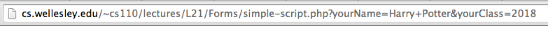
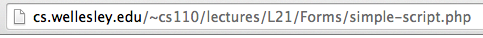

Form Attributes
When we introduced forms earlier in the semester,
we didn't talk about any of the attributes of the <form>
element. Here is how it will usually look like:
<form
id = "..." <!-- id is used by the CSS or Javascript -->
name = "..." <!-- name is used by the server -->
action = "..." <!-- action is the URL of a server script -->
method = "..." <!-- method can be only GET or POST -->
>
<!-- Here go all elements of the form, such as <input>, <button>, etc. -->
</form>
We have seen the attributes id and name before, thus,
let's focus on the two other attributes, action and method.
- method specifies how the form content will be sent to the server
- action specifies where the form content will be sent for processing
There are two methods of sending the data to the server using the HTTP protocol: GET and POST.
The main difference between GET and POST is how the data is sent to the server.
GET will append the form field names and values onto the end of the URL as key/value pairs.
POST encodes the data differently and values are not visible in the URL.
The two forms below are identical, they have the same value for action
(referring to the script simple-script.php), but one uses GET and the other POST.
Try them out and look at the URL bar to see the difference.
GET: 
POST: 
Simple PHP to process your Forms
A widespread, server-side language called PHP can be used to process
the form data sent from a browser and email it to someone. To avoid
the PHP script being exploited by spammers, the PHP script will have
the destination hard-coded
into the script. That is, the form
data can only be sent to a destination of your choosing, not the
sender's. This is perfect for emailing a "contact us" form to your
organization's secretary, emailing the contents of an order form to
your organization's fund-raising chair, and so forth.
We will not burden you with having to learn PHP just to use this
ability. Instead, we'll provide you with a mechanism for creating a
PHP script that sends email to your desired recipient
(the to
address). It will work a lot like the
following, except that you won't be able to specify the recipient:
In fact, let us see a simple PHP script that will process the result from a simple HTML form. Fill and submit this form first, and then check your email.
In order for the script to access your name and address, it needs to know the exact
name attribute values we used in writing the HTML form. Here is the code
of our simple form:
<form method="post" action="emailscript.php">
<p>Your Name: <input type="text" name="from_name">
<p>Your Email: <input type="text" name="from_email">
<p>Subject: <input type="text" name="subject">
<p>Body: <input type="text" name="body">
<p><input type="submit" value="Submit form">
</form>
AJAX Technology
The problem with the first above-shown technique is that it redirects the user to a new web page. In fact, everytime a form is submitted the page is automatically either refreshed, or redirected to the result sent by the server.
Sometime we might desire this, but sometime not. In fact, it is quite common to expect receiving notifications on the same page that we are already using. For that purpose, we will use a technology named AJAX.
Ajax, which stands for "Asynchronous JavaScript and XML", is a way of passing data in a structured format between a web server and a browser, often without the user being aware of such a transaction, because there is no page refresh or redirection to a new page. Thus, with Ajax and some DOM maipulation, you can load or reload only a portion of the page with jQuery and JavaScript.
Although when the technology was introduced, the XML format (a relative of HTML) was used for exchanging data between the server and the client, nowadays, JSON (Javascript Object Notation) is the preferred format. This is what we will use as well.
The way AJAX works is summarized in the graphics below:
The AJAX technology is implemented within the jQuery library and can be used easily in our Javascript applications. In this course, we won't explore Ajax in all its glory, but we will use it to gracefully send email to a back-end script.
Example 1: Using AJAX to post data to the server
Let's first see it in action. Here is the previous RSVP
example, converted to Ajax: Fill and submit
this form first, and then check your email.
Let's examine the JavaScript code:
$("#ajax_send_button").click(sendmail);
function sendmail () {
$.post(
// first arg is action
$("form").attr('action'),
// second arg is data
$("form").serialize(),
// third arg is response callback
function (response) {
if( response.status == "ok" ) {
var now = new Date();
$("#response_element")
.html("Your mail was sent at "+now.toLocaleTimeString())
.css("color","green");
} else {
$("#response_element")
.html("Sorry, your mail was not sent")
.css("color","red");
}
},
// fourth arg is expected response type
"json");
}
The first line just makes sendmail the event handler for
the button, which is no longer a button of type submit but
is now just a plain button.
The sendmail function consists of just one call to the
jQuery .post() method.
// The four parameters of the $.post() method $.post(URL, data, function(data), dataType)
Out of these four parameters, only the URL is always required, however, most of the time we will provide argument values for at least the three first parameters.
- URL - this is the relative path to the server script that will take care of the
data that the HTML page will submit. For us, this will always
be the same as the
ACTIONattribute of the form, so we might as well use that. - data - this variable will contain all the information collected by the form, or
other information of the page. Often the jQuery method
.serialize()will be used to package the data in a format that is easy to transport. - function(data) - this is the callback function that will be invoked by the browser, once it gets the response from the server. The response will be stored in the first parameter, data. We can then do whatever we want. Here, we put some text in the response element, which is an empty paragraph on the page.
- dataType. Our back-end script will respond in JSON, as we saw earlier, in the pre-ajax version.
Return to the Ajax example page and also open the Console. Notice all messages in the Console after you click on "Submit form". Then, open the view source page and study the jQuery code at the bottom. The comments should help you understand every line of code.
Sending Mail to Predetermined Address
Here's an example of the kind of dedicated email script we will use.